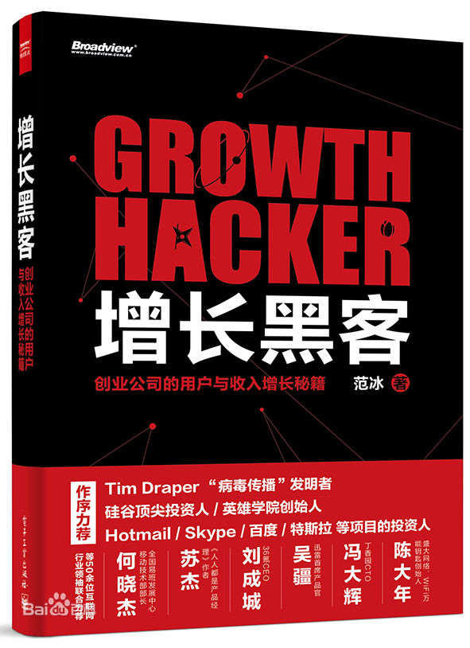

注：【】部分为笔者心得，非原文摘抄。
- 社交网络、邮件营销、磁力营销等病毒营销的相关概念，连同搜索引擎排名的优化、众包、市场协作等，共同构成了如今被称为“黑客增长术”的概念。
- 增长黑客的价值正是通过不断地“头脑风暴——排定优先级——测试——分析——常态化部署”来优化产品策略，减少这当中每个环节的不必要损耗，提高转化效率，从而不断扩大自己用户群体的数量和质量。
- 增长技巧：琢磨活跃用户的行为模式，并将之归纳为一套“标准动作”，然后引导其他用户去执行这套“标准动作”。
- 增长黑客应当具有如下特质：
- 数据为王
- 增长黑客的一切工作都是建立在数据分析的指导之上；
- 专注目标
- 关注细节
- 富于创意
- 信息通透
- 增长黑客必须一方面深入理解自己产品用户的活跃渠道，另一方面抬眼看世界，时刻掌握海内外最新的产品和市场动向，尤其关注新生渠道和业界趋势。
- 进行数据分析的首要环节是明确分析的目的。脱离具体目标的单纯数据查看没有任何价值。其次是要了解数据来源的相关信息，包括各项指标的定义、采集点和上报机制。
- 上报机制是指数据上报的时机、内容和技术实现形式。只有明确了上报机制，才能及时对数据异常做出感知，及时作出调整反应。
- 在数据来源正确的前提下，进行数据分析的方法可分为定性分析和定量分析。
- 定性分析，就是对事物的性质做出判断；
- 定量分析，是指对事物的数量作出统计；
- 数据分析就是定性分析与定量分析相互结合，不断验证的过程。
- 保持对数据的敏感性，有助于在机遇与危机不期而至前，提前嗅到并做出准备。
- 互联网公司的市场部是一个以数据为依据、资源为根基、金钱为武器、人脉为引擎的有机系统，寻求公司对外利益的最大化。市场部的设立更适合有一定资源优势的企业，尤其是那些商业模式已得到验证、正在或已经建立了持久稳定的用户获取渠道，且能将成本压缩在合理范围内的较成熟企业。
- 真正贯彻了“增长黑客”理念的公司，每一个人都应该是一名增长黑客，在完成自己的岗位职责之余，能够兼顾产品指标的达成情况。
- 即便丑陋，能带来增长的方案在一定程度内也是可以接受的。
- 增长黑客强调一种能够排除各种干扰、通过数据来找到长期有效可持续增长方法的精神。
- 增长黑客至少需要具备以下素质：
- 开发的能力
- 设计的心态
- 产品的觉悟
- 传播和分享的热情
- 过滤掉那些单纯将写代码当成一份养家糊口的工作的人。
- 伟大的人，不会在意自尊，大家都把注意力集中到产品上，毕竟这才是最有效的工作方式。—— 史蒂夫·乔布斯
- 一切美好愿望必须首先建立在这样的前提之下——市场愿意接纳这款产品。
- 成功地执行一项没有意义的计划是导致失败的致命原因。
- 创业团队早期的首要任务，就是找到产品与市场的契合点（Product/Market Fit），而不是盲目地大干快上。
- 聪明的团队应当从产品每一次调整所带来的反馈中汲取营养，不断强化优势，及时纠正错误，找到适合自己的 PMF 状态，成为被市场接受的玩家，而不是因循守旧地沉沦在基友的产品创意中，完全罔顾市场的需求和反馈。
- 让产品与市场契合，归根到底就是产品提供的服务能够切实满足用户的某方面需求。
- 需求应当源自客观实际，而非主观臆断。
- 经济学中，刚需指商品供求关系中受价格影响较小的需求。
- 选择刚需作为产品切入点，能够减少前期项目风险和后期推广阻力，但面临的竞争也更为惨烈。
- 初创企业的价值取决于自身成长性，也就是“能不能做大”。
- 在需求分析中寻找适合的市场机会，以此拟定产品方向和发展策略，应当成为每位创业者准备大施拳脚前的第一要务。
- 对精益创业者而言，用户的反馈应当作为产品开发中决策的根本依据。
- 创业者在进行规划时，必须明确目标，坚定地砍掉与验证产品无关的任何附件模块。
- 以小为始、保持迭代，才是创业团队保持生存力与竞争优势的不二法门。
- MVP 除了待验证的基本功能外，必须具备反馈渠道、公告看板、自动升级和使用行为统计。
- 早期用户选的不够精准，可能会影响产品发展的速度和路径。
- 在“内容为王”的眼球经济时代，争夺用户有限注意力的有效方法之一就是持续输出内容依靠内容来渗透和维系，从而获得潜在用户的认可关注。
- 根据消费者行为学的经典认知模型 AIDMA，消费者从接触信息到最后购买，会经历 Attention（引起注意）、Interest（引起兴趣）、Desire（唤起欲望）、Memory（留下记忆）、Action（购买行为）五个阶段。
- 适用于长文案的“滑梯理论”：优秀的文案，应当让阅读者有种乘坐滑梯的感觉，即顺着你预先铺设的轨道一路顺畅地滑下去，走完全程，到达终点。
- 宣传文案的写作过程需要遵循以下准则：
- 熟悉产品
- 头脑风暴
- 谋篇布局
- 简要概述 → 话题事件 → 核心特色 → 主要功能 → 团队访谈 → 未来计划 → 有奖活动 → 转化引导。
- A/B 测试的基本思想包括：
- 提供两个方案并行测试
- 不同方案之间只存在一个变量，排除其它干扰因素
- 以某种标准判断结果优劣，筛出最优方案
- 产品不息，测试不止。永远不要满足于当下的结果，因为世界上总有更好的解决方案。
- 游戏的四大决定性特征：目标、规则、反馈系统和自愿参与。
- 真正的用户增长是增长与流失之间的差值。
- 留住已有的用户胜过拓展新的客户。
- 造成用户留存率低的原因可能是以下几种：
- 存在程序漏洞、性能瓶颈
- 用户被频繁骚扰
- 话题产品的热度减退
- 有更好的替代品
- 其它因素
- 如游戏通关、设备遗失、需求不再存在、产品生命周期终结等
- 宁可麻烦自己，也绝不拖累用户。
- 先让新用户有事可做。
- 一分钱效应（The Penny Gap）：让用户为产品付出第一分钱时往往是最为艰难的一关。
- 当你在使用免费服务时，你自己就是商品。
- 免费用户往往更加挑剔。
- 变惩为奖的三大原则：
- 绝不责备用户
- 给予合理补偿
- 提供转化便利
- 效益化管理的核心是利益驱动。
- 精细化管理是指，在业绩这一单一指标之外，增设其它指标，从而避免粗放式管理造成的危险。
- 衡量病毒传播的两大核心指标是 K 因子（K Factor）和病毒循环周期（Virial Cycle Time）。1 个 K 因子表示平均 1 个用户能带来 1 个新用户。K 因子越高，产品自我获取新用户的能力越强。病毒循环周期，是指从用户发出病毒邀请，到新用户完成转化所花费的时间。病毒循环周期越短，效果越好。
- 人们总是比较愿意答应自己认识和喜欢的人提出的请求，还乐意主动传播自己喜爱的事物，借以表达一种倾向，阐发一种观点，寻求志同道合的伙伴，融入有归属感的圈子。
- 有时候，简单粗暴的利益交换，能换来立竿见影的传播效果。
- 频繁联系或近期有过联系的人，成为潜在被邀者的可能性更大。
- 给用户展示“利他”的文案，比“利己”的文案更容易带来转化。
- SEO 要做的事情，是先给搜索引擎更多向用户推荐你的理由。注意以下几点：
- 找到和你产品相关，最多人搜的词；
- 频繁更新原创、独特的内容；
- 网站要结构清晰，最好提供网站地图和最近更新页面列表给搜索引擎参考；
- 每页主要内容明确而不重复，并且在 Title 有所体现；
- 服务器稳定，打开速度快；
- 代码干净，对于非文本内容打上文本标签，将样式和内容分开；
- 建设从其它高权重网站来的链接；
- 不要刻意或者过度优化，被惩罚了的话基本就前功尽弃了。
- App Store 的排名、搜索算法的要点：
- 下载量和 App 活跃度，都是榜单排名的重要因素；
- 苹果对新上线的 App，或者刚更新的 App 的排名，是会有加权的；
- 开发者可以自己选择 App 的上线日，周末下载 App 的人最多，但竞争也最激烈；
- 提交 App 的时候，App 标题、公司名、关键词，都对搜索结果排名有影响；
- App 图标一定要精美，截图一定要好看；
- App Store 描述文案只能显示前三行，要简明扼要；
- App Store 中文分词能力不太完善，因此很多 App 都堆砌不相关的热点关键词以提高搜索排名；
- 越狱平台的安装量和激活，也会被苹果记录在活跃度内，因此可以在越狱平台先行发布，然后正式在 App Store 上发布的时候，下载量就有了基础；
- App 的有效评分也会影响排名。
- 从增长黑客的角度而言，以下几点值得在实践中重点考量：
- 换位思考；
- 因素保护；
- 国际视野。